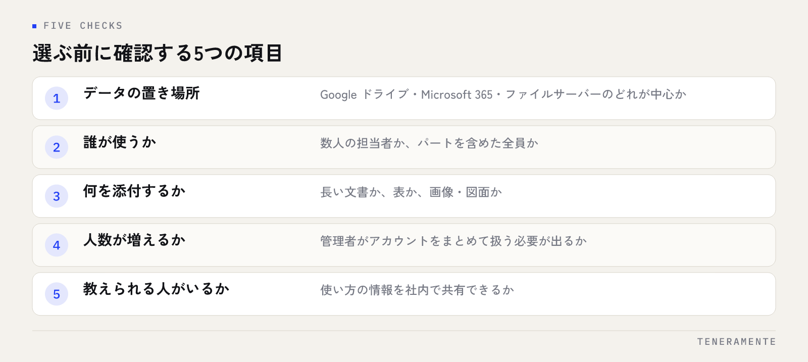

「ChatGPTとClaudeとGemini、どれを契約すればいいですか」という質問を、よくいただきます。結論から言うと、比べるべきなのはサービスの性能ではなく、社内のどの作業に使うかです。3つの違いと、業務での使い分けの考え方を整理します。
📌 この記事の結論
3つの生成AIサービスは、できることの大枠が重なっており、性能の差は短い期間で入れ替わります。選ぶ基準になるのは、扱うデータがどこにあるか、誰が使うか、何を添付するかという業務側の条件です。1つに絞る前に、実際の業務で2週間だけ試す手順を先に決めてください。
01違いを「性能の優劣」で覚えると、選べなくなる
生成AIの比較記事を読むと、どれが賢いか、どれが速いかという話が中心になりがちです。しかしこの観点で選ぶと、半年後にもう一度選び直すことになります。各社が機能を更新する間隔は短く、ある時点での優劣は、そのまま来年の判断材料にはならないからです。
実際に社内で使い始めてから困るのは、賢さの差ではありません。社内のファイルを読ませられない、使う人がログインの仕方を覚えられない、入力してよい情報の線引きが決まっていない、といった運用の側です。
ですから比較の軸を変えます。「どれが優れているか」ではなく「自社のこの作業に、どれが合うか」です。この形にすると、比較する項目が具体的になり、判断もその場で付きます。生成AIを業務で使うこと自体の進め方は中小企業のChatGPT業務活用ガイドに整理しています。
02まず、3つに共通していることを押さえる
違いの前に、共通部分を確認しておくと判断が早くなります。3つのサービスは、いずれも次のことができます。
- 対話形式で文章を書く、要約する、言い換える
- 資料やファイルを読み込ませて、内容について質問する
- 画像を読み取って、書かれている内容を説明させる
- ウェブ上の情報を検索して、その内容を踏まえて答える
- 無料で使える範囲と、有料の個人向けプラン、法人向けのプランがある
- 外部のシステムから呼び出すための API が用意されている
つまり、議事録の要約、メール文の下書き、資料の読み込みといった一般的な業務であれば、どれを選んでも成立します。ここで差が出ないということは、逆に言えば「とりあえず有名なほうを選ぶ」で済む業務も多いということです。
差が出るのは、社内の既存の環境とつなぐ場面、扱う情報の種類が決まっている場面、使う人数が増える場面です。
03一般的な傾向としての違い
以下は固定の優劣ではなく、各サービスがどこに力を入れてきたかという傾向です。更新によって変わる前提で読んでください。
| サービス | 社内で使うときの特徴 | 向きやすい場面 |
|---|---|---|
| ChatGPT | 利用者が多く、使い方の情報を社内で共有しやすい。周辺の機能や外部サービスとの連携が広い | はじめて全社に広げるとき |
| Claude | 長い文書の読み込みと、文章の推敲・作成で評価されている。開発者向けの使い方も用意されている | 契約書や仕様書など長い資料を扱うとき |
| Gemini | Google のサービス群との組み合わせを前提に作られている | 社内が Google Workspace で動いているとき |
この表の使い方には注意があります。どれか1つに決めなければならない、という前提自体を一度外してください。部署によって扱う資料が違う場合、使い分けたほうが結果的に安く済むことがあります。個人向けプランであれば、2つを並行して契約して比べることも現実的な範囲です。
04選ぶ基準は、作業の内容と置き場所で決まる
判断材料は、サービス側ではなく自社側にあります。確認する項目は多くありません。

- 扱うデータがどこにあるか … Google ドライブ、Microsoft 365、社内のファイルサーバーのどれが中心か
- 誰が使うか … 数人の担当者か、パートを含めた全員か
- 何を添付するか … 長い文書か、表か、画像・図面か
- 人数が増える見込みがあるか … 管理者がアカウントをまとめて扱う必要が出るか
- 教えられる人が社内にいるか … 使い方の情報を社内で共有できるか
とくに効くのは1つ目です。社内の資料が Google ドライブにあるのか、Microsoft 365 にあるのか、ファイルサーバーにあるのかで、毎回の手間が変わります。ファイルを都度アップロードする運用は、最初は気になりませんが、毎日使う業務では続きません。
2つ目の「誰が使うか」も大きいです。IT に慣れた数人で使うのか、パートを含めた全員で使うのかで、求められるものが変わります。全員で使うなら、画面の分かりやすさと、社内で教えられる人がいるかどうかが優先されます。
先に確認しておくこと
法人向けのプランでは、入力した内容を学習に使わない設定や、管理者がアカウントをまとめて管理する機能が用意されています。個人向けプランのまま社内で使うと、この管理ができません。人数が増えることが見えている場合は、法人向けプランの条件を先に確認してから配り始めてください。
05社内で使う前に決めておくこと
サービスを決めるより先に決めておくと、後戻りが減るものがあります。入力してよい情報の範囲、出てきた内容を誰が確認するか、使った記録をどこまで残すかの3点です。
このうち最初の「入力してよい情報の範囲」は、サービスの選択とは独立しています。顧客名を含む情報を入れてよいか、見積書をそのまま読み込ませてよいか、人事に関わる内容を扱ってよいか。ここが決まっていないと、現場は使わないか、黙って使うかのどちらかになります。
2つ目は、出力の確認です。生成AIは、事実と異なる内容を自然な文章で返すことがあります。社外に出す文章と、数字を含む資料は、人が確認する手順を残してください。確認する人が決まっていれば、現場は安心して下書きに使えます。社内ルールの作り方は生成AIの社内ルールをテンプレートで作るにまとめています。
選ぶのに時間をかけるより、決めた1つを3か月使ったほうが、自社に合うかどうかは早く分かります。
06決める前に、2週間だけ試す
比較記事をいくら読んでも、自社の資料を入れたときの手応えは分かりません。現実的なのは、候補を2つに絞って、同じ業務で2週間ずつ試す形です。
手順は次のとおりです。まず、毎週必ず発生する作業を1つ選びます。議事録の要約、問い合わせメールの下書き、仕様のたたき台づくりなど、成果物の形が決まっているものが向いています。次に、その作業を担当している人に両方のアカウントを渡します。
試す期間は、同じ指示文（プロンプト）を使ってください。指示の書き方で結果は大きく変わるため、違う指示で比べると、サービスの差なのか指示の差なのかが分からなくなります。最後に、担当者に「どちらを続けたいか」と「その理由」を一言で聞きます。ここで出てくる理由が、自社にとっての選定基準そのものです。
試すときの注意
無料の範囲だけで比べると、判断を誤ります。無料プランでは使える回数や機能が制限されており、実務で使うときの手応えとは違うためです。2週間であれば個人向けプランの費用は限られるため、有料の範囲で試してください。
07よくある失敗を、先に知っておく
選定でつまずく形は、だいたい次の3つです。
1つ目は、全社に配る前に、使う作業を決めていないことです。アカウントだけ配られた状態では、ほとんどの人が数回触って終わります。作業を1つ決めて、その作業の担当者から始めるほうが定着します。
2つ目は、比較を長引かせることです。3か月かけて検討している間に、各社の機能は更新されます。検討が長いほど判断は難しくなるため、期限を先に切ってください。
3つ目は、1つに決めたことを理由に、他を見なくなることです。契約は続けながら、半年に一度、候補を試す人を1人決めておくだけで十分です。乗り換えが必要になったときの判断が早くなります。導入でつまずく型全般はAI導入が失敗する7つのパターンにまとめています。
3つとも契約するのは無駄ですか？
無料プランのままで社内に広げてもよいですか？
社内のファイルを読ませるには、どれが向いていますか？
08まとめ：比べるのはサービスではなく、自社の作業
ChatGPT・Claude・Gemini は、文章作成、要約、資料の読み込みといった一般的な業務であれば、どれを選んでも成立します。差が出るのは、社内の環境とのつながり方、使う人の幅、扱う情報の種類です。
進め方は、共通してできることを押さえる、自社側の確認項目で候補を2つに絞る、入力してよい情報の範囲と出力を確認する人を先に決める、同じ業務・同じ指示文で2週間試す、担当者の理由を選定基準として残す。比較に時間をかけるより、決めた1つを業務で使い続けたほうが、自社に合うかどうかは早く分かります。
TENERAMENTEなら、社内のどの作業から始めるかの切り出し、入力してよい情報の範囲と確認手順を含む社内ルールの整備、2週間の試用で何を見るかの設計まで、業務の中身を見たうえで組み立てます。サービスの比較表を集める段階で止まらず、担当者が明日から同じ手順で使える状態まで持っていけます。AI導入支援の進め方をご覧いただいたうえで、お問い合わせからお気軽にご相談ください。